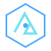

01
Digital energy products
Shape and deliver digital products that connect energy markets, customers and operations.
- Product strategy & discovery
- Product management
- Platform design & delivery
- API and systems integration

SUSTAIMABLESustaimable helps energy businesses turn complex challenges into practical digital products, data platforms and technology solutions.
Built for the teams shaping a more intelligent energy system
From early-stage strategy to implementation, we bring product thinking, energy-domain understanding and practical engineering together.
Shape and deliver digital products that connect energy markets, customers and operations.
Make distributed energy resources easier to integrate, coordinate and operate.
Turn fragmented energy data into useful insight, operational decisions and better services.
Bridge business goals and technical execution with structured, standards-aware delivery.
Engagement scope is tailored to each client's needs. Specific engineering, certification and compliance work is agreed against applicable standards, authorisations and project requirements.
We work with organisations that need to make energy technology more useful, connected and commercially effective.
Digital capability, operational data and customer-facing energy services.
↗Product direction, platform development and complex integrations.
↗Technology that helps connect assets, markets and operations.
↗Digital systems that make energy and sustainability data actionable.
↗Good ideas only matter when they solve a real problem. We combine commercial context, energy-domain knowledge and product delivery discipline to move from uncertainty to a clear next step.
Align on outcomes, constraints, users and the current system.
Prioritise opportunities and develop a practical roadmap or design.
Support implementation with clear ownership, decisions and measures.
Sustaimable is an independent energy technology consultancy focused on the intersection of energy systems, digital products and data.
We bring together strategic perspective and hands-on delivery, drawing on a distributed network of technical specialists when a project needs additional capability. The model is designed to stay focused, adaptable and close to the client's goals.
Tell us what you're building, where you're stuck, or what you want to improve. We'll start with a practical conversation.
Start a conversation ↗ No pitch deck required. Just a useful first conversation.